farmbox
A mobile app that allows consumers to locate, evaluate and sign up for CSA (Community Supported Agriculture) programs near to them while tracking box contents, recipes, meal plans and more. View Mobile Prototype
Introduction
summary
Community Supported Agriculture, or CSA, is a system that connects the producer and consumers within the food system more closely by allowing the consumer to subscribe to the harvest of a certain farm or group of farms.
Farmbox is a simple-to-use mobile app that allows consumers to easily locate, evaluate and sign up for CSA options near to a specified location, while also encouraging retention after joining.
See: Mobile Prototype
My role: UX Research, UX Design, Visual Design, Branding.
Deliverables: Key Requirements, User Surveys, Competitive Analysis, User Personas, User Stories, User Flows, Wireframes, Usability Testing, High Fidelity Mock Ups, Prototype, Journey maps.
Tools Used: Figma, Photoshop, Illustrator, InVision, UsabilityHub, Draw.io, Pen & Paper.
The Problem
Not only is there very little awareness about CSA’s in the general population, but even for people who are aware, there are very few centralized resources of information about ALL the CSA options available in a particular area.
Further, there are many common frustrations that CSA users indicate are a barrier to retention, frustrations that could potentially be alleviated through the use of an app.
The main frustration reported by current and former CSA members is simply knowing what they will be receiving each week and what to do with it.
The goal: encourage participation and retention in CSA programs!
The Solution
My solution was to create a mobile app that helps users locate, evaluate and sign-up for a CSA in their area.
Once signed up, users can easily view subscription contents for a particular week.
They also receive recipe suggestions for the items in their box and can create and save meal plans and shopping lists.
My Process
user research
In order to gain better insight into awareness, participation and frustrations among the general public, I conducted an online survey utilizing google forms.
Survey results indicated awareness of CSA programs was alarmingly low, while participation and retention was both even lower.
User Survey Insights:


More detailed analysis from my survey can be found: here
Competitive analysis
Surveying the landscape for competitors, it was challenging to find a true competitor. Three applications emerged that offered some similar functionalities. These applciations were CSAware, Farmigo and Harvie.

Results of my analysis:
CSAware: is a product for overall farm management that incorporates an app for customers as part of its package. It is a robust package that is aimed at farms rather than consumers, doesn’t offer a centralized locator for all CSA’s and might be expensive and overkill for a small farm.
Farmigo: like CSAware, is aimed at farms rather than consumers and is a robust farm management tool. It is not for locating and comparing CSA options and is integrated with farm management software. .
Harvie: is also aimed at farms, but has a more streamlined interface than the other two competitors and doesn’t seem to involve a whole farm management solution. It does however only represent farms that are signed up with Harvie, rather than fully representing all options in the area.
More detailed analysis from my competitive and SWOT analysis can be found: here
personas
From my analysis, three types of users emerged:
- Current and former CSA participants
- People who are aware of CSA's but have never joined.
- People who are completely unaware of CSA's.
Persona #1: Jason - programmer “I just never knew what I was going to get”

Motivations -
He loves to cook, but doesn’t have a lot of free time for shopping and meal planning. He used to belong to a CSA and loved the locally sourced, fresh produce. He is very organized and likes to plan ahead.
Frustrations -
When he belonged to the CSA, he never knew what he was going to get and so never had the right ingredients to pair with what he got in his box. His kids could be picky eaters and he felt without proper planning much of the food went to waste.
Persona #2: Katelyn - beekeeper “I just don’t need that much food”

Motivations -
Healthy eating and sustainable living are both a huge priority for Katelyn. Though she would like for everything she consumes to be organic, she needs to be very budget conscious in shopping for food. She would like to shop locally.
Frustrations -
CSA options in her area are too expensive for her budget. The shares usually involve too much food. She hates all of the plastic packaging in the supermarket.
Persona #3: Kristin - dental hygienist “I don’t know what to cook that’s quick, healthy and easy”

Motivations -
Kristin really needs things to be convenient and quick because she doesn’t have a lot of time after work. She wants her whole family to eat healthier but finds it hard to implement.
Frustrations -
She hates that the only time she has to shop is on the weekend when the stores are busier and prices are higher. Eating healthy just seems like so much work. She grew up on processed food and doesn’t really know how to make vegetables taste good. She has three picky kids.
user stories
My personas informed the development of user stories. High priority tasks define the minimum viable product (MVP).
- As a new user I want to
- sign up for a CSA
- As a general user I want to
- find CSA’s with pick up locations near me
- As a returning user I want to
- log in to my account
- see what produce is in a particular box
- see suggested recipes based on box contents
- As a farmer/manager I want to
- add items to my inventory
- create share/box types and prices
- add inventory to weekly boxes
Full list of user stories available: here
user flows
Based on my low and high priority user stories, I created user flows for the MVP. Starting with sketches:

I then created my digital user flows in draw.io:
Farmbox "Sign-up"

Farmbox "Find a CSA"

All sketches are available here: here
All digital user flows: here
These flows informed a preliminary: Content Strategy and Sitemap
wireframes
Using my content strategy document and sitemap as a guide, I began sketching wireframes for each user flow:
Early wireframe sketches: here
Seeing everything mapped out visually, encouraged me to make some structural changes in order to facilitate better organizational possibilities.
- Instead of separating “saved” content (i.e. links, bookmarks, data that is stored in another location and just referenced) and “stored” content (i.e. files that are uploaded or created and actually “live” in this repository) into separate sections, I decided to integrate all types of data and focus on creating varying ways to view or organize these files and links.
- In each section, I offered additional opportunities for filtering information to make things easier to find.
This led to an early set of digital wireframes, created in Figma.
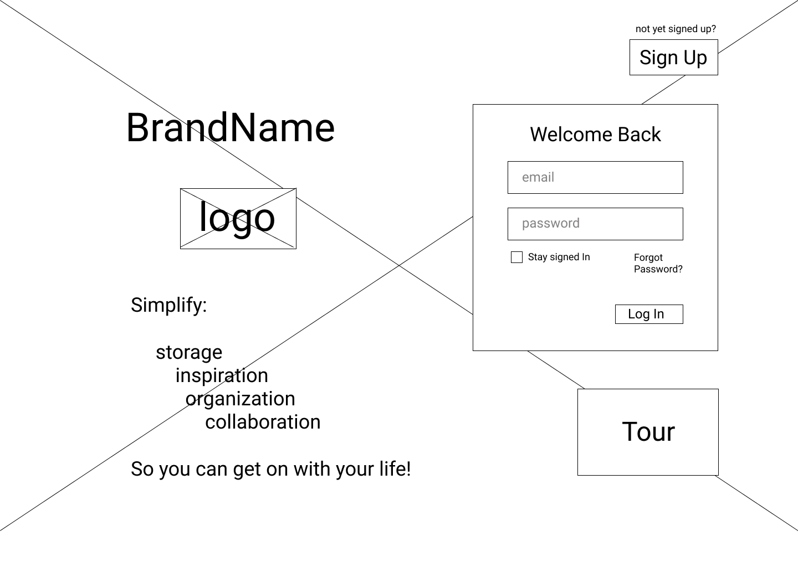 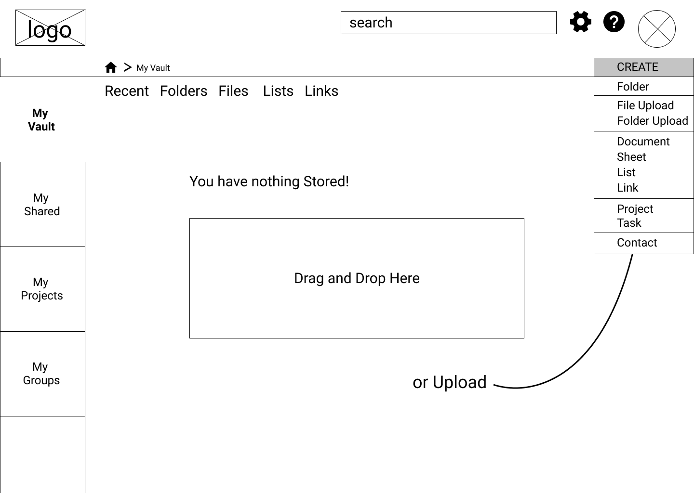 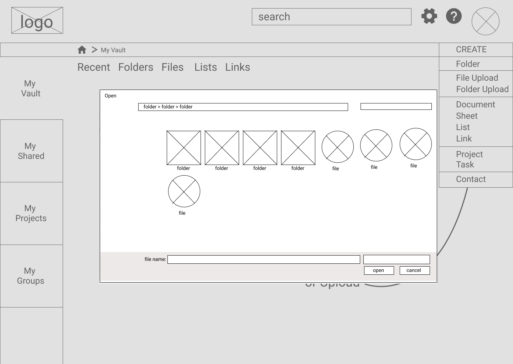 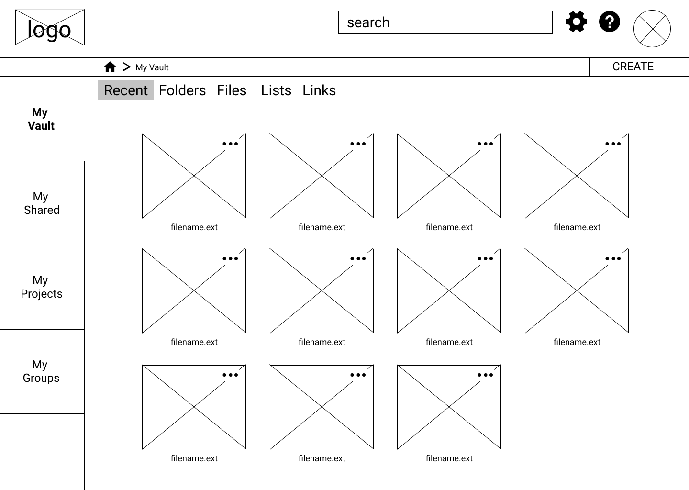
Preliminary digital wireframes: here
prototype 1 + testing
I imported my wireframes into inVision to create a lo-fidelity prototype for testing. I conducted a series of Usability Tests utilizing the prototype and a test script.
Tests were conducted both in person and remotely, using zoom. Feedback indicated that a few changes, predominantly to naming and language, should be made.
- My original plan to put the “sign-up” screen on the landing page (like dropbox does) was a little too aggressive for my users. Feedback suggested they should be gently “sold” some information about the product before assuming they want to sign up.
- On my file browser for uploading, I should change the word “open” to “upload”.
- I should consider changing “Create” to “Add”, or make some alteration to my design that lets users know that this button is the main place to add anything to the site.
- I should increase the size of my fonts to make them more readable.
Summary of findings from preliminary Usability Testing: here
branding
Step 1: Logo and Style
After making many lists and brainstorming a number of ideas, I decided on the name “Gather.” The fact that gather was a verb rather than a noun suggested taking action.
Gather definition:
- Come together; assemble or accumulate.
- Bring together and take in from scattered places or sources.
It also has an implied social component, an opportunity to share.
In order to minimize clutter and to present a feeling of ease and order, I chose a very minimal and clean style.
Full Branding Summary: here
With the name settled and good sense of the “feel”, I moved on to sketching for a logo:
All sketches, mind maps and brainstorming lists: here
Preference tests for my initial digital designs indicated that I was going a little too “crafty” or “heavy” in my design and this did not align with the branding goal of minimal and modern.
Original moodboard: here | Revised moodboard: here | Preference Test: here
More iterations and testing, led me to a final, streamlined logo and style:
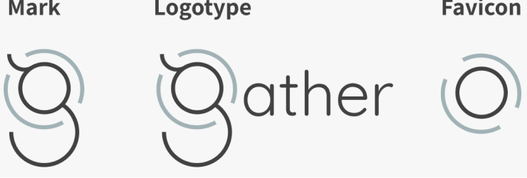
Step 2: Style Guide
My style guide details all design choices including typography, color palettes and iconography. Again, the basis of my design was keeping everything as clean, simple and minimal as possible. The interface is mostly white and grey, with little pops of soft tertiary color when accentuation is needed.
Color
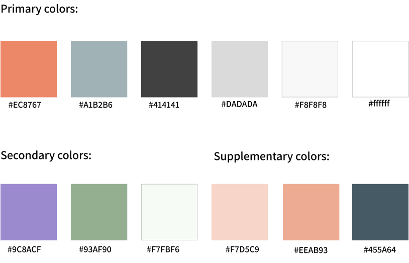
Typography
I used three sans-serif font families, for a clean, modern and geometric look and feel.
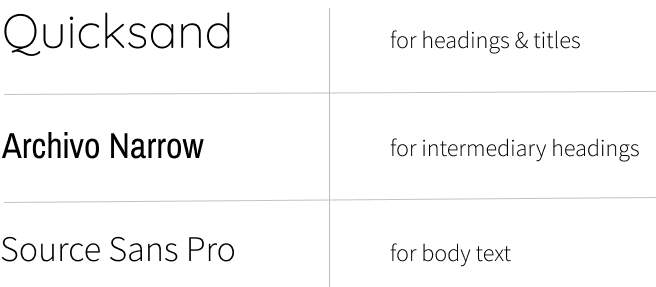
Iconography
I used many icons from the open-source icon set ion icons, with a few modifications where lines needed to be simpler and cleaner.
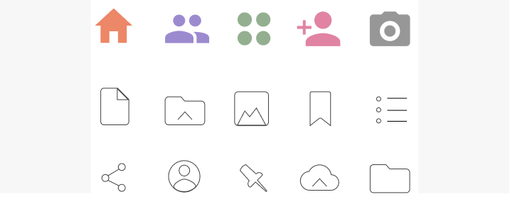
Full Style Guide: here
hi fidelity mock-ups
Applying the principles of my style guide to the wireframes I generated initial screen mockups.
Desktop Screens v01:
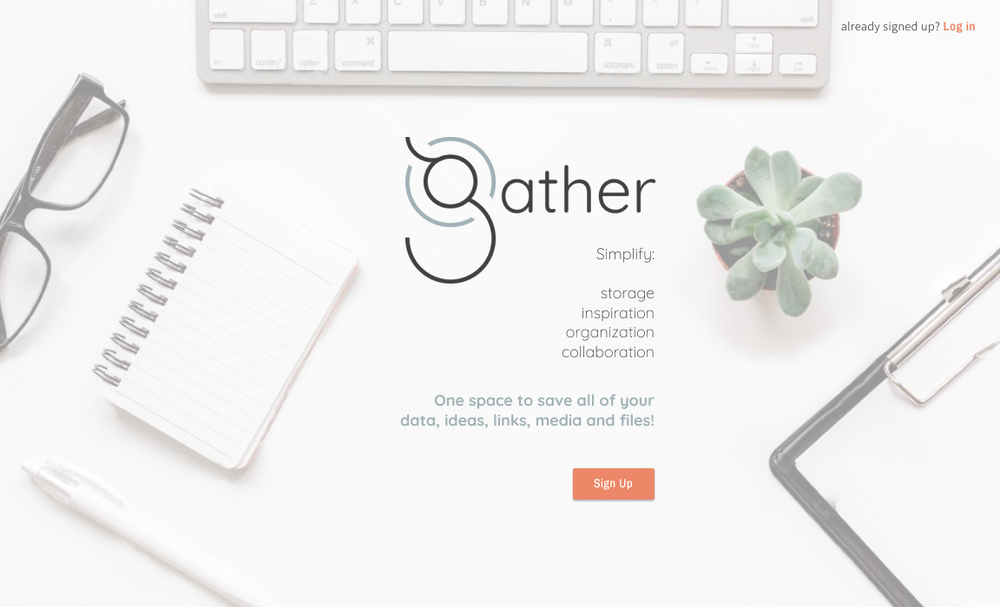 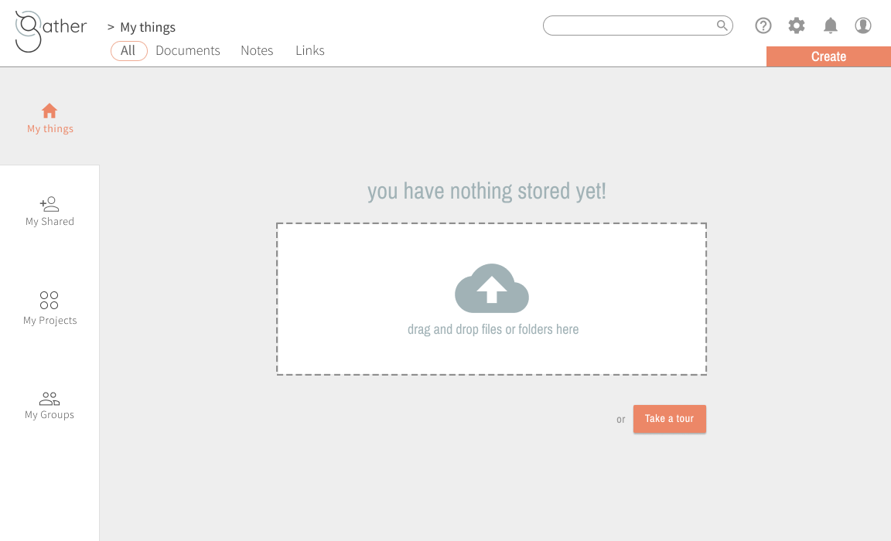 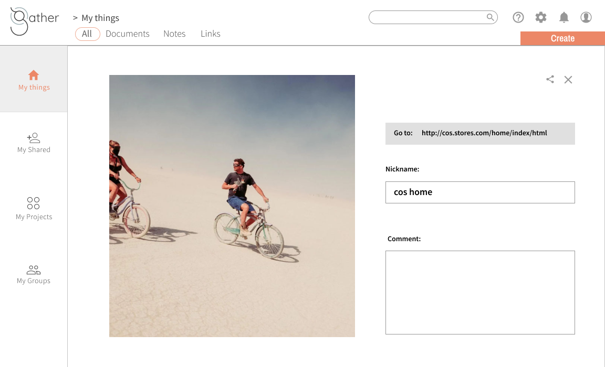
Mobile Screens v01:
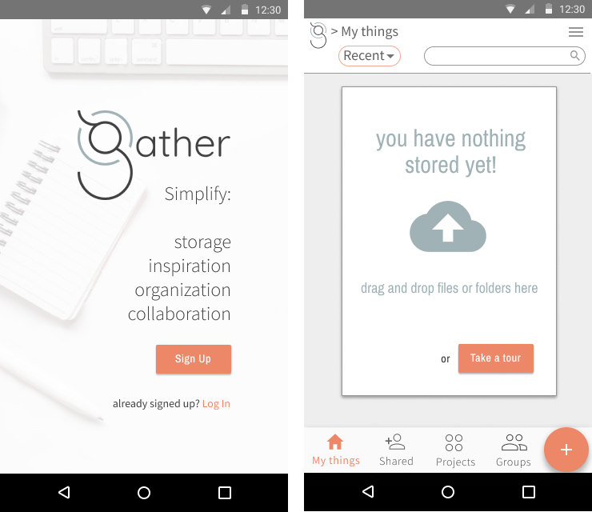 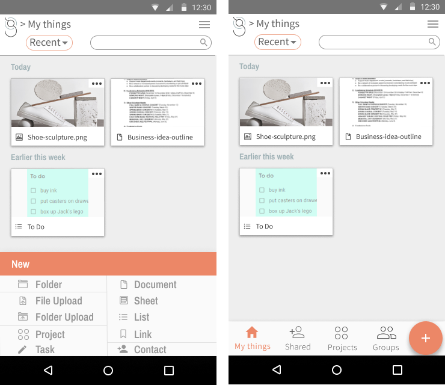
preference testing
Using usabilityhub.com and slack, I conducted a series of preference tests on my early mock-ups.
Test #1
Which mobile toolbar is most effective and gives sufficient information?

The most popular choice was B. Users indicated that they did not need to be reminded on every screen which app they are using, and keeping the toolbar simple and less cluttered is more effective.
Test #2
At the very top of the screen, which design is best for indicating the chosen filter? 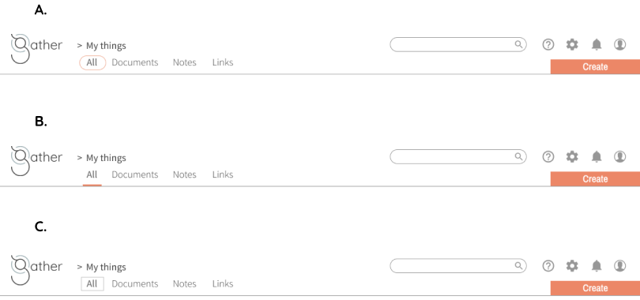
Though A. was my original design, B. was chosen by 100% of my test participants.
Test #3
Which bottom navigation for mobile is most effective? 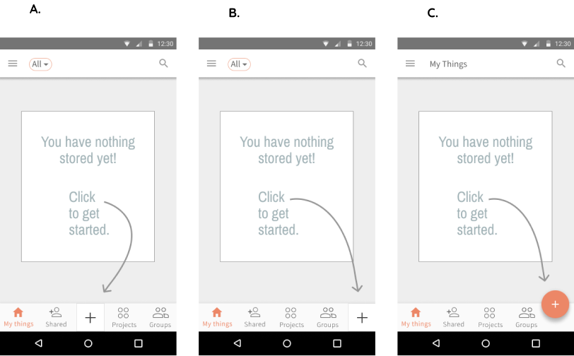
The majority of users chose C, indicating that the orange button stood out more and distinguished it from the other options, which are essentially about location rather than action.
Takeaway: These preference tests were a valuable lesson in the delicate balancing act of keeping things simple, while also providing sufficient information and cues.
Mock ups v02
The results of my preference testing, along with some suggestions from senior designers led to a second round of mockups. Below are just some of the implemented adjustments.
Change #1:
Progression of mobile bottom sheet (and icons/folders.) 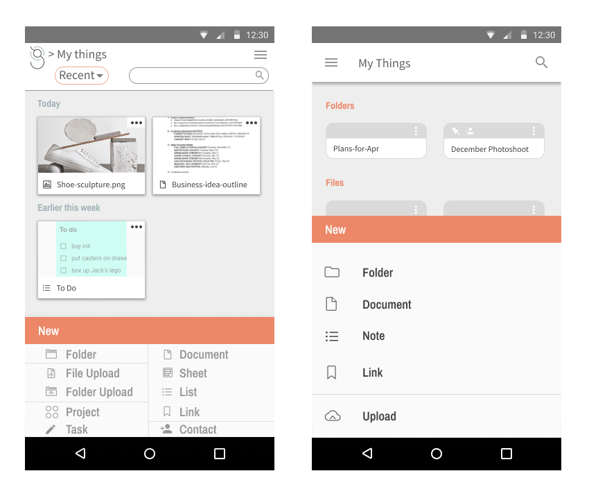
Originally, I was trying to offer too many options on my bottom sheet. I wanted maximum functionality. But, tests showed that users had trouble finding what they were looking for. I had too many options and I was also not leaving enough room around the different options.
I decided to stick strictly to the “Miller’s Law” recommendation of +/- 5 items at a time and reduce some immediate functionality, in favor of clarity. I also created a larger sheet for more “breathing room.”
Change #2:
Progression of desktop “create” menu: 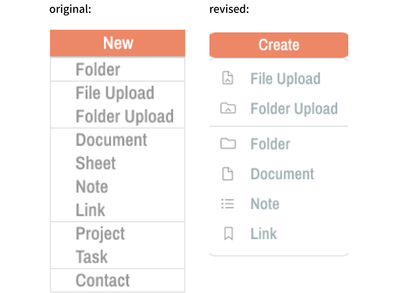
I decided to similarly reduce the options on my desktop menu.
Again, it was a decision to sacrifice some immediate functionality in order to minimize cognitive overload.
More usability testing
With these design changes applied to my prototype, I went into a final round of Usability Testing. Though all participants generally found it pretty straightforward to perform the requested tasks. The patterns that warranted some revision were:
- The landing page does not clearly show that the site is more than a competitor to google drive. The fact that it aims to consolidate facets of applications such as pinterest/pocket, keep and asana also, does not seem to be readily apparent. Action item: Content needs revising.
- It is not obvious that the landing page scrolls to further information. Action item: add indicator to signify there is more reading below the fold.
- It is not obvious when you first log in that you would click the “create” button to upload files. Action item: revise empty state content and create onboarding tour.
- Participants expect a toolbar add-on for saving URL/link, no one wants to type or paste a URL in (I had this functionality in original wireframes, it was just hard to prototype so left it out). Action item: Bring back toolbar extension feature to “save link.”
- Screen/button for “adding a project” and “adding files to project” are too similar. Action item: use color to distinguish these two from each other.
- The information about “My groups” did not make it completely clear that this section was about contacts and not about groups of files. Action item: review wording and create onboarding tour.
final product
Building on all of these iterations and considerations, I reached my final design:
Desktop Prototype | Mobile Prototype
Final Desktop Screens:
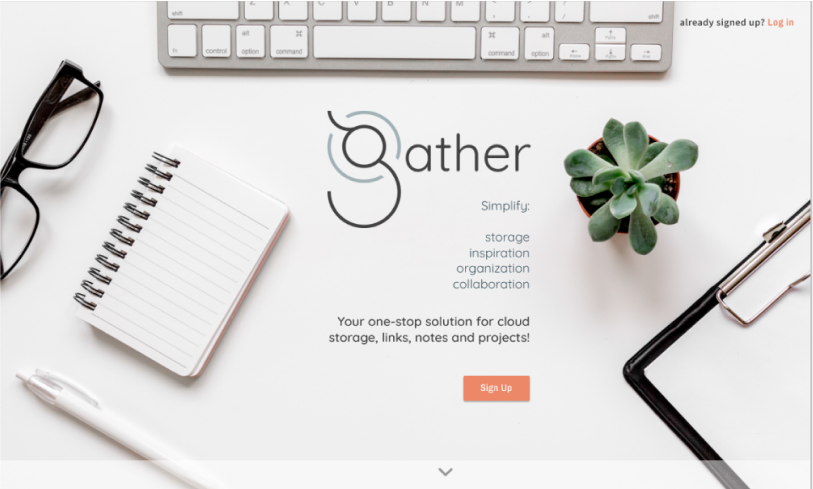
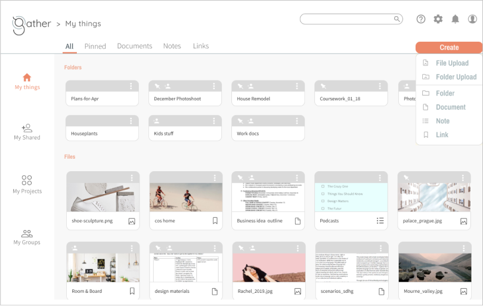
Final Mobile Screens:
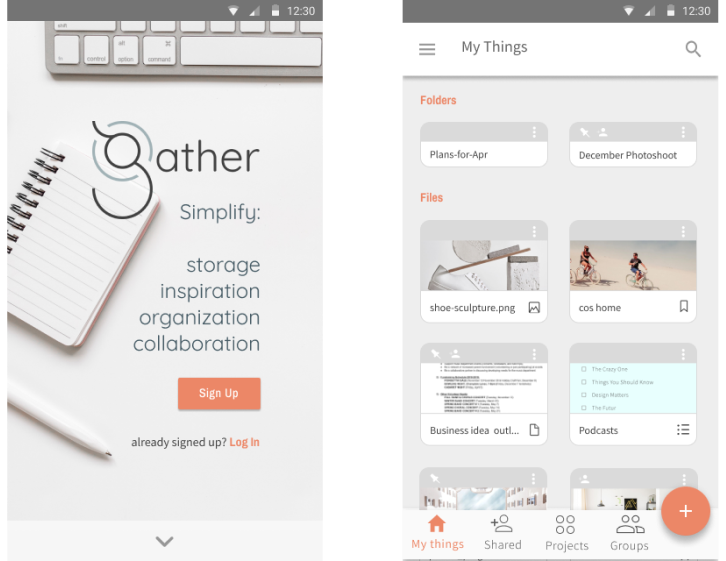
Conclusion
conclusion
Through many hours and iterations, there were valuable lessons learned at every step in the process. Some key takeaways:
- Putting ideas and designs out there, testing early and often is very beneficial for honing in on what works and what doesn’t.
- Though aesthetic considerations matter, form must serve function. Superfluous visual elements, no matter how aesthetically pleasing, can become a distraction.
- Effective design hinges on creating a delicate balance between offering sufficient information and too much information. At the beginning of my design process, I was loosely adhering to the idea that humans have a capacity for keeping ~7 bits of information ‘in the head’ short term (this is known as Miller’s Law)
- In my effort to offer more functionality up front however, I was erring on the higher side rather than the lower side of that approximation. My user testing and feedback confirmed it was better to organize in chunks of ~5 (the lower end of the formula) and sacrifice some upfront functionality.
- Give ideas and images room to breathe!
- Scrolling and drilling down are not necessarily the enemy. Often it’s better to have only a handful of readily visible options, essentially narrowing your focus so as to prioritize your attention and resources.